Pi-hole
Network-wide Ad BlockingO que é o Pi-hole?
Pi-hole é um bloqueador de anúncios em toda a rede. Em vez de instalar bloqueadores de anúncios em todos os dispositivos e em todos os navegadores, você pode instalar o Pi-hole uma vez na sua rede e ele protegerá todos os seus dispositivos. Como funciona de forma diferente de um bloqueador de anúncios baseado em navegador, o Pi-hole também bloqueia anúncios em locais não tradicionais, como em jogos e em TVs inteligentes.
Como funciona?
O Pi-hole funciona como um servidor DNS interno e privado para sua rede. Para muitos usuários domésticos, esse serviço já está sendo executado no seu roteador, mas seu roteador não sabe onde os anúncios estão – mas o Pi-hole o faz. O Pi-hole interceptará quaisquer consultas para domínios conhecidos que veiculação de anúncios e os negarão acesso, para que os anúncios não sejam baixados.
Isso significa que os sites serão carregados normalmente, mas sem anúncios; como os anúncios nunca são baixados, os sites serão carregados mais rapidamente. O Pi-hole também armazena essas consultas, portanto, a capacidade de resposta a sites comumente visitados também pode ser notada.
Instalação
Modo Fácil- Instale o curl:
Primeiro, use as ferramentas de gerenciamento de pacotes APT para atualizar o índice de pacotes local:
sudo apt updateVerifique se o curl está instalado, se não estiver use o comando abaixo:
sudo apt install curl - Instalar o Pi-hole usando o seguinte comando: curl -sSL https://install.pi-hole.net | bash
- Instale o git:
Atualize os pacotes:
sudo apt updateCaso o git não esteja instalado use o comando abaixo:
sudo apt install git - Instalar o Pi-hole usando os seguintes comandos:
Clone o repositório
git clone --depth 1 https://github.com/pi-hole/pi-hole.git Pi-holeEntre no diretório "Pi-hole/automated install/"
cd "Pi-hole/automated install/"Execute o script em shell para iniciar a instalação
sudo bash basic-install.sh
Independentemente do que escolheu iremos prosseguir com a instalação:
-
Ao iniciar a instalação você verá a seguinte tela:

-
Aqui está a tela de boas-vindas no teclado, pressione Enter para continuar.
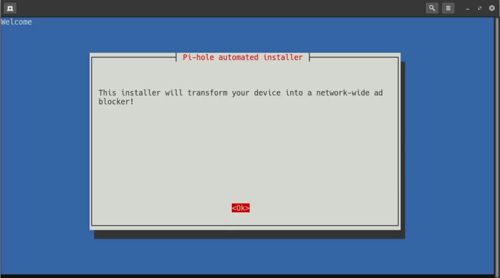 -
O Pi-hole é um software de código aberto e fornece uma URL onde você pode fazer doações para ajudar a financiar seu desenvolvimento. Pressione Enter para continuar.
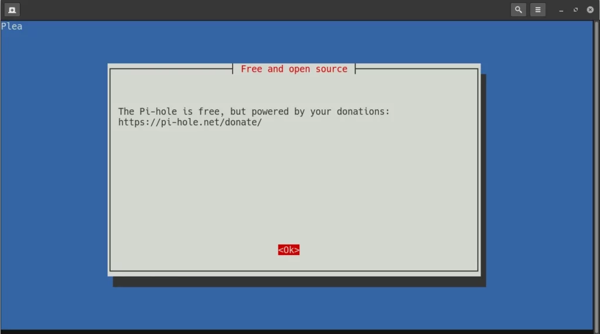 -
Em seguida, o instalador explica que um endereço IP estático é necessário para que o Pi-hole funcione corretamente. Selecione SIM e pressione ENTER. Se você precisar voltar e reconfigurar sua rede, você pode escolher NÃO aqui para fazê-lo.
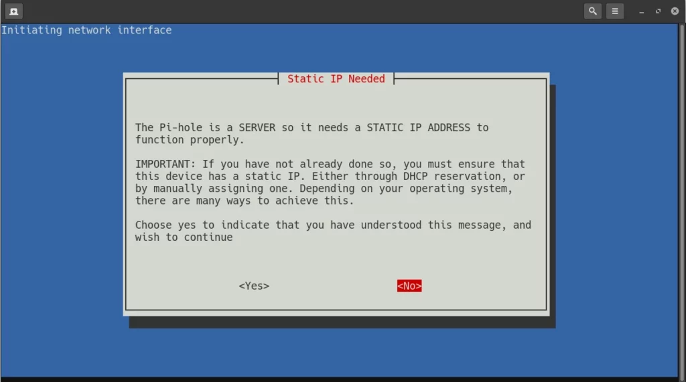 -
Esta é a nossa primeira decisão real a tomar como parte da instalação do software – escolhendo o seu provedor de DNS upstream. Você pode escolher qual provedor você prefere. Depois de selecionar, pressione a guia no teclado para mover o cursor e, em seguida, com o mouse selecione ok e pressione enter.
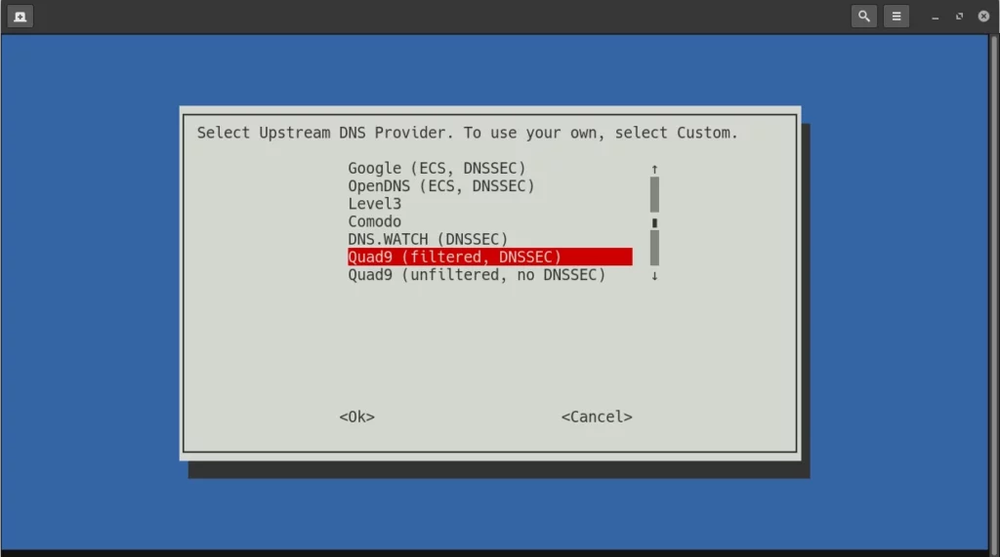 -
Em seguida, você é notificado de que o Pi-hole depende de uma lista de terceiros de anunciantes para uso ao bloquear anúncios. Se você não deseja usar esta lista, pressione espaço. Se você está bem com isso, deixe-o em paz. Em seguida, pressione a guia para mover o cursor e, em seguida, secar para OK e pressione enter.
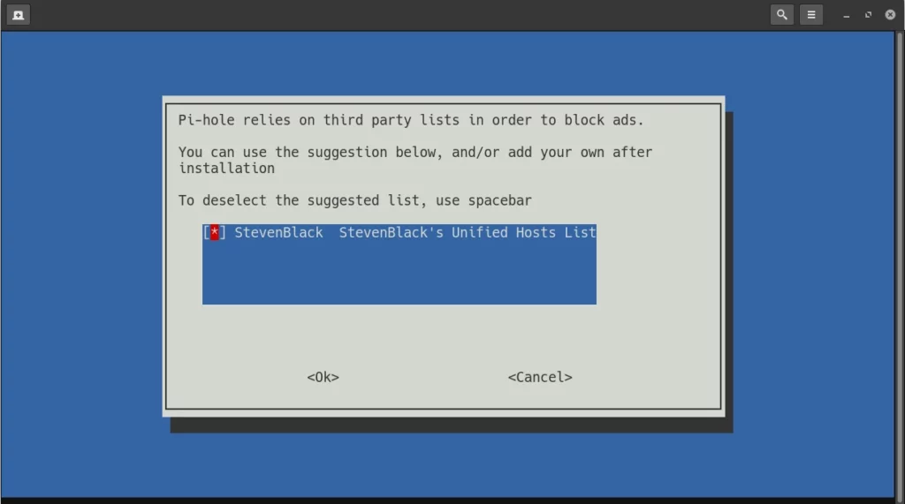 -
Agora, o instalador precisa saber se você deseja usar a interface de administração da Web Pi-holes. Pi-hole pode ser controlado a partir de uma linha de comando, no entanto, é muito mais simples de gerenciar a partir da interface web. É minha forte recomendação deixar essa opção definida como ON. Pressione a guia no teclado e, em seguida, seleta para ok e pressione enter.

-
Para a interface de administração web para funcionar, você vai precisar de software de servidor web instalado. Instalar o Pi-hole para usar um servidor web que já está instalado está além do escopo deste tutorial. Deixe a opção definida paraon, em seguida, pressione a guia para mover o cursor e a seta para ok e pressione enter.
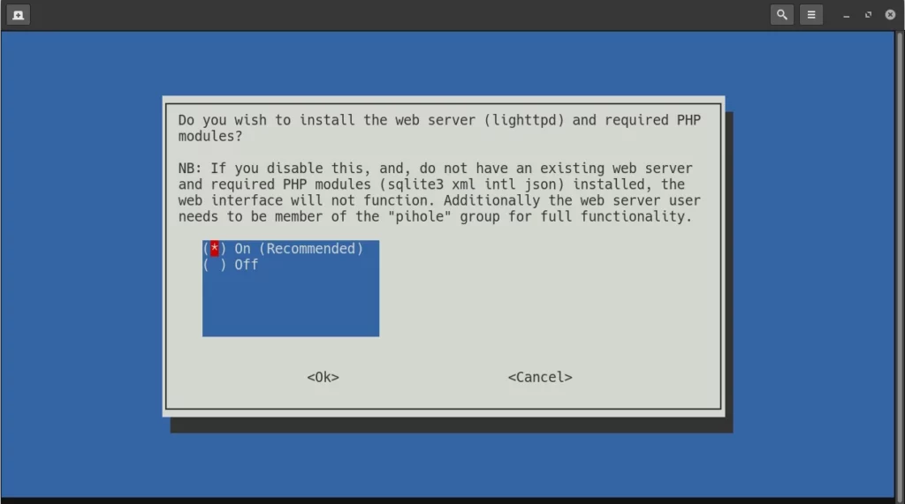 -
Dependendo de quão consciente de privacidade você é, você pode não querer que seu Pi-hole mantenha registros das consultas DNS que ele faz – essencialmente um registro de todos os servidores que os dispositivos que você configura para usar seu acesso ao Pi-hole. Se você estiver bem com Pi-hole criando logs, deixe a opção definida para a seta de outra forma para fora. Pressione a guia, em seguida, selegue para ok e pressione enter. Você pode alterar essa configuração após a instalação dentro do painel de administração, caso escolha.
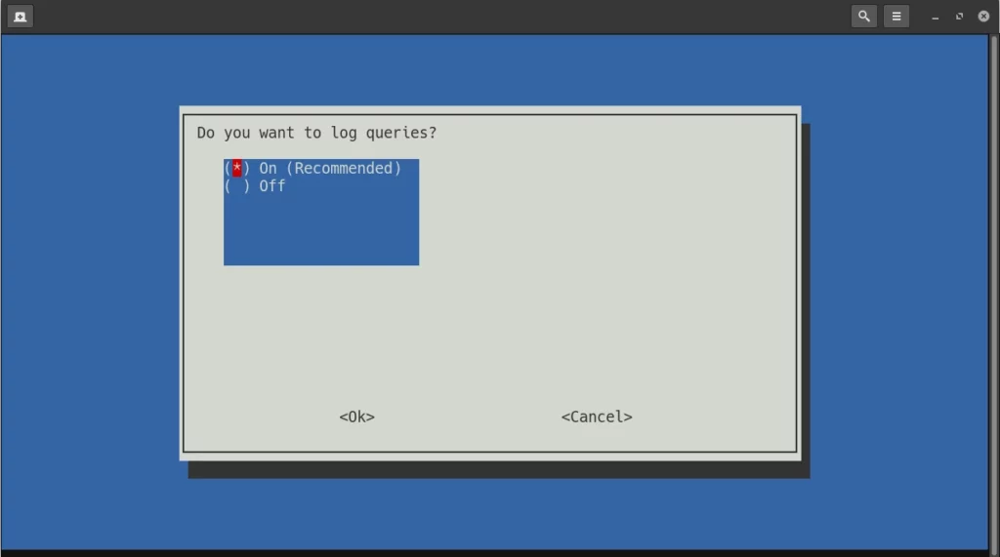 -
Se você optou por ativar o login na tela anterior, agora pode decidir quanta informação é registrada. Suas opções são:
- 0 Show everything – isso é bastante auto-explicativo. Todas as informações possíveis são registradas nos logs.
- 1 hide domains – esta opção registra tudo o que é EXCETO nomes de domínio.
- 2 hide domains and clients – esta opção registra tudo o que é EXCETO de nomes de domínio e qual cliente fez a solicitação.
- 3 Anonymous mode – esta opção desativa tudo, exceto as estatísticas mais anônimas.
Seta para sua escolha e pressione o espaço, em seguida, tabulação e seta para ok e pressione enter. Esta opção pode ser alterada mais tarde na interface de administração da web se você mudar de ideia mais tarde.
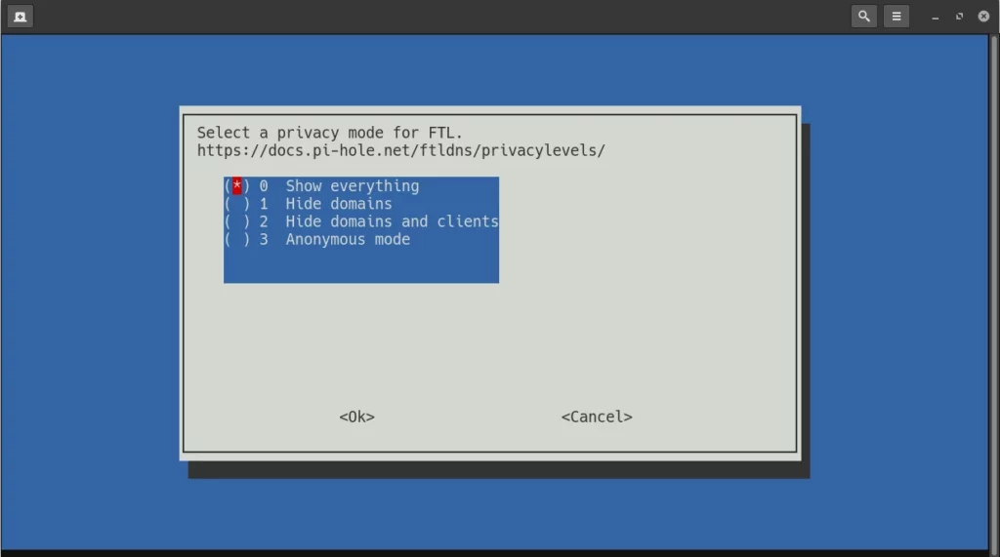 -
Sua instalação do Pi-hole está concluída, no entanto, temos alguns passos opcionais que podemos fazer antes de usá-lo. Observe que o Pi-hole oferece um URL para acessar sua interface de administrador, bem como uma senha de login. Retire esse URL e senha. Pressione Enter para terminar.
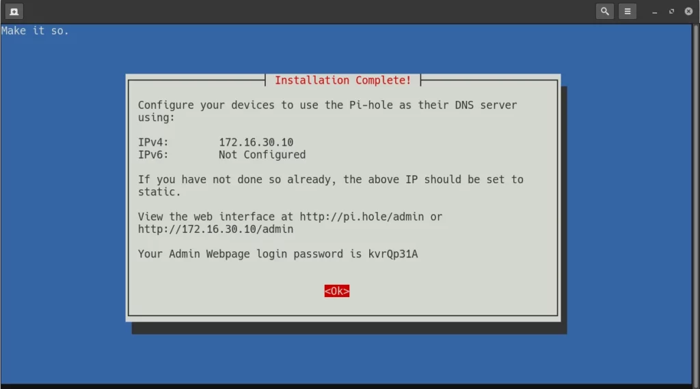 - Passo opcional – Alterar a senha
Embora a senha gerada pelo instalador do Pi-hole seja uma senha justa, se você quiser escolher sua própria senha, você pode usar esse comando para alterá-la.
pihole -a -pVocê será solicitado a inserir uma nova senha (ou em branco para nenhuma senha – não recomendada) e depois confirmá-la.
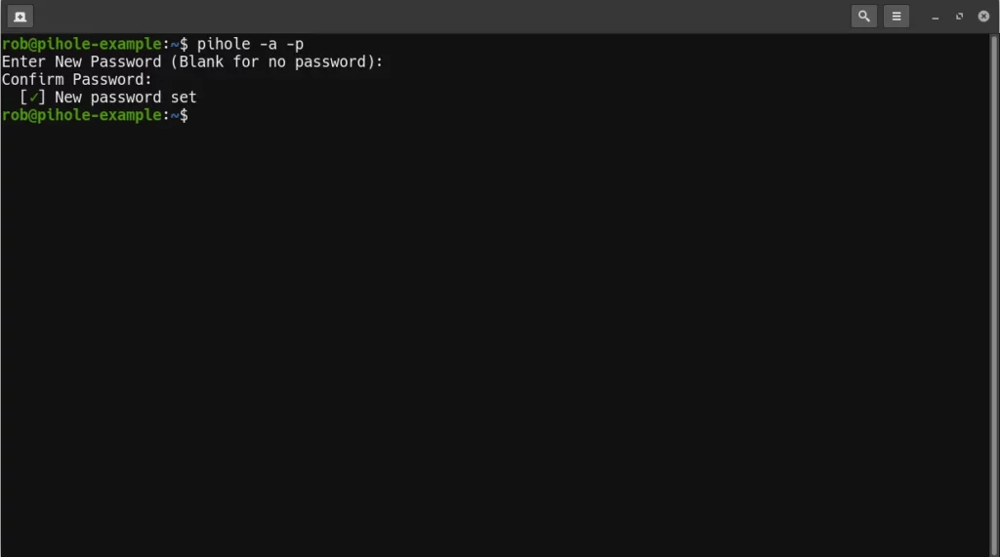
Docker Pi-hole
Para prosseguir com a instalação do Pi-Hole via Docker, é necessário que o Docker e o Docker-Compose estejam instalados.
- Preparando seu Sistema para Executar o Pi-Hole como um Contêiner:
Se você já tem o Docker instalado em seu sistema, pode pular para a seção “Instalando o Contêiner Docker do Pi-Hole”.
Primeiro, atualize a lista de pacotes em sistemas.
sudo apt updateEm seguida, instale o Docker usando o seguinte comando:
curl -sSL https://get.docker.com | shAdicione seu usuário atual ao grupo “docker” para facilitar a interação com os contêineres:
sudo usermod -aG docker $USER - Instalando o Contêiner Docker do Pi-Hole:
Crie um arquivo chamado docker-compose.yml (por exemplo, usando sudo nano docker-compose.yml) e cole o seguinte código:
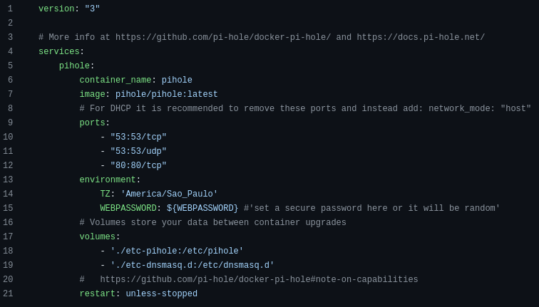 abaixo deixarei o link do github para o arquivo docker-compose.yml.Defina sua senha em WEBPASSWORD
- Configurando o Pi-Hole:
- Acesse a interface web do Pi-Hole em http://0.0.0.0/admin/
- Use a senha definida na variável WEBPASSWORD.
-Configure as opções conforme suas preferências.
- Adicione o Pi-hole como servidor DHCP
Vá para aba de configurações de redes.
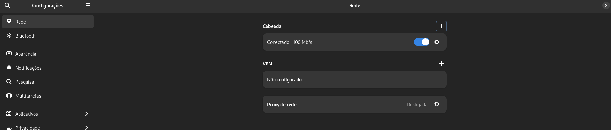Em IPV4 vá até DNS e coloque o IP do Pi-hole.
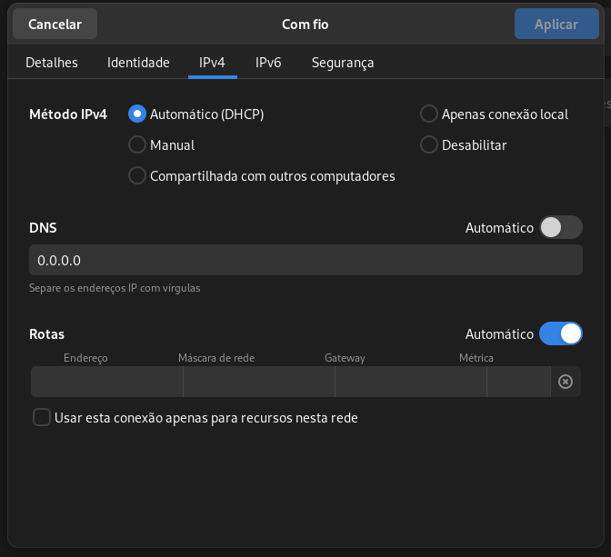 -
Verifique se tudo foi configurado corretamente, vá até o terminal e digite o comendo abaixo:
cat /etc/resolv.conf 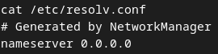
Fontes
- Site - Pi-hole
- Documentação - Pi-hole
- Github - Pi-hole
- Github - Docker Pi-hole
- Bloqueie anúncios em casa usando Pi-hole e um Raspberry Pi
- installing-pi-hole-debian-ubuntu
- Bloquear Anúncios e Ter Internet mais Rápida? Pi-Hole neles!
- Bloqueei TODOS os anúncios da Internet com isso aqui - Pi-Hole
- Bloqueie TODOS os anúncios! Crie SUA VPN com Pi-Hole
Pagamento
⚡ Lightning Network guerrelr0@getalby.com